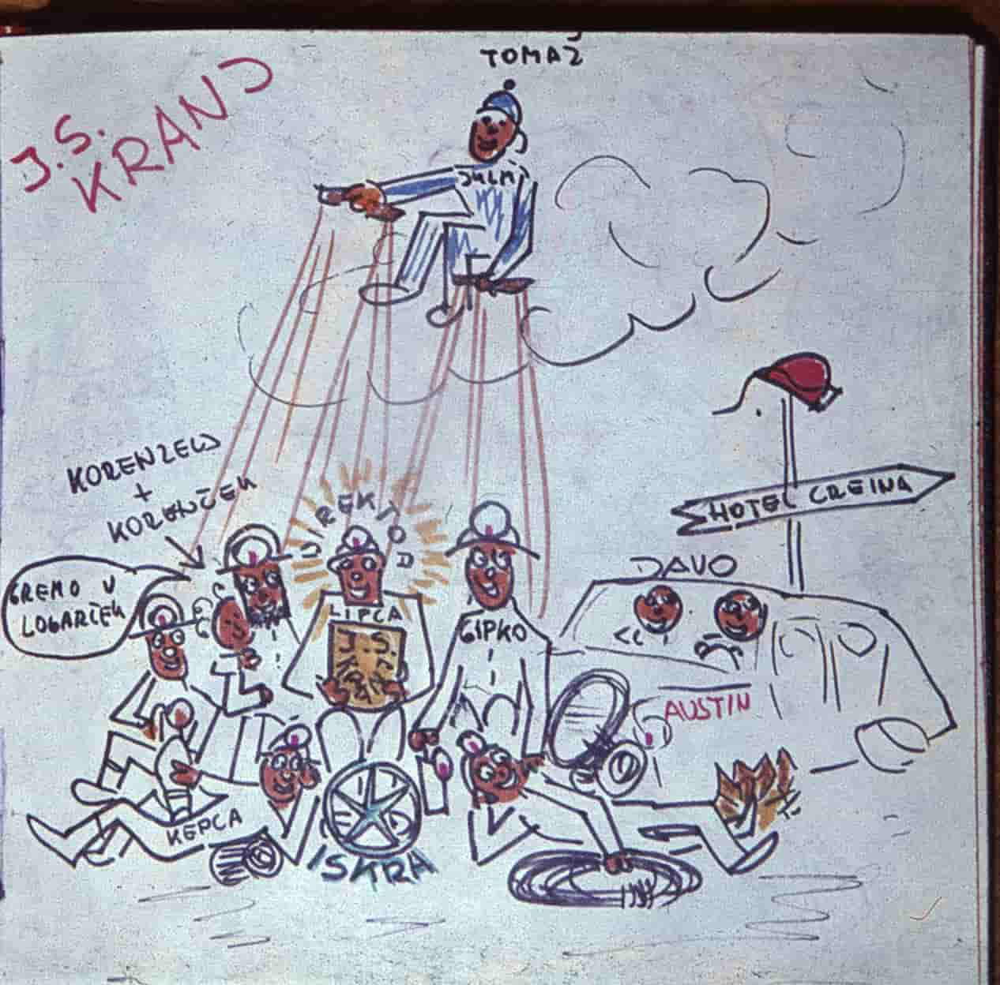
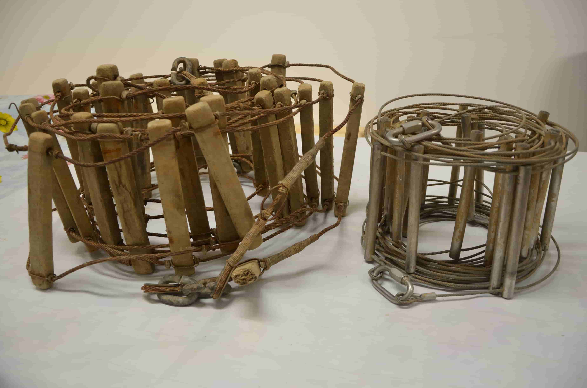

Zgodovina:
Začetki raziskovanja jam na Gorenjskem segajo v drugo polovico dvajsetega stoletja. V okolici Kranja so zanimanje za raziskovanje jam prvi pokazali člani Prirodoslovnega krožka prve kranjske gimnazije, ki so leta 1954 pomagali Janezu Gantarju (geološki tehnik) pri raziskovanju Arneževe Luknje v Dupljah pri Naklem. To so bila raziskovanja, ko so na glavah še nosili prebarvane Italijanske vojaške čelade, svetili pa so si s karbidnimi svetilkami.

Prve zapise o raziskovalnih akcijah v okolici Kranja, je objavil član Prirodoslovnega krožka prve kranjske gimnazije, Andrej Triler v Gorenjskem Glasu, leta 1954. Delo takratnega »društva« je objavil pod naslovom »Po podzemeljskem svetu« , s podnaslovom »Jame na Gorenjskem, ki jih malokdo pozna«. V teh člankih navaja: Kevdrc na Lubniku, Dobruško jamo pri Smledniku, Jeralovo brezno ( ni omenjen kraj, danes je registrirano Jeralovo brezno v grebenu severno od hriba Rovnik med Besnico in Nemiljami ), Krištanov brezn in Lovšinovo brezno v Zabukovju, Bidovčevo jamo, Miklovo brezno globine 6. metrov, Turkovo jamo v Rovtah, Lipniško in Dežmanovo jamo ( po vsej verjetnosti v okolici Lipnice), Vaznikarjevo zijalko nad Goričami, ter dve jami v Letencah in to Veliki pekel in Mali pekel. Leto dni kasneje je objavil še raziskovanja iz Arhove jame v zgornjih Dupljah, jame v Zadragi, Lebinščice pri Strahinju. Iz tega obdobja sta ohranjena dva načrta, katera je narisal Rado Okorn. In sicer gre za Previs nad Pelnarjem- iz dne 24.1. 1955 in Jamo nad Podnartom z datumom 15.8. 1955. Rado Okorn je narisal tudi več jamskih živali, vse risbe pa so iz leta 1955.

Leta 1954 se je znotraj Planinskega društva Kranj, ustanovil jamarski odsek. O tem času priča Marko Aljančič v Planinskem vestniku iz leta 1960, pod naslovom »O jamarstvu na Gorenjskem«. Sekcija, ki jo je ustanovil Marko Aljančič, je leta 1960 utihnila, kasneje, leta 1963 pa jo je ponovno obudil Lipovec Karel. skupaj z še osmimi člani. Poimenovali so se v Društvo za raziskovanje jam Kranj. ostali člani : Franci Ciprle, Tone Čufar,Jože Kepic, Rafo Rajgelj, Jože Potočnik, Jože Kepic, in Davorin Preisinger (Davo). 1.3.1965. so se sekciji pridružili še Alojz Rode, Jože Osterman, Miro Preisinger, in Franc Luznar.
 popr.jpg)
Društvo je veliko pomagal tudi Tomaž Planina, član ljubljanskega društva Ljubljana matica. Z Davorinom Preisingerjem, tudi izvrstnim alpinistom, sta se večkrat skupaj odpravila na raziskovanja. Iz kranjskega društva so fantje že takrat sodelovali z današnjo Jamarsko zvezo Slovenije, ki je skrbela za usposabljanja jamarjev pri nas. Jamarska društva ( Železničar Ljubljana, Ljubljana Matica, Jamarska sekcija PD Kranj,..) so si včasih precej pomagala, zato je zaslediti veliko skupnih raziskovanj.

V začetku sedemdesetih pa se je vedno bolj kazala težnja po samostojnem društvu. Tako so se sporazumno s Planinskim društvom Kranj, dne 16.6. 1972 osamosvojili in pričeli delovati kot DZRJ Kranj.

Danes je društvo včlanjeno tudi v Jamarsko zvezo Slovenije.